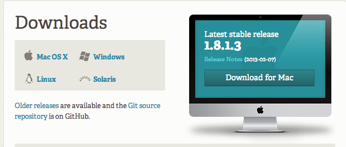
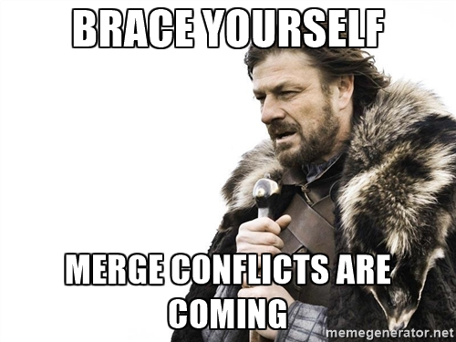

Intro to Git and Github
Welcome!
Girl Develop It is here to provide affordable and accessible programs to learn software through mentorship and hands-on instruction.
Some "rules"
- We are here for you!
- Every question is important
- Help each other
- Have fun
Welcome!
Tell us about yourself.
- Who are you?
- What do you want to learn here tonight?
- Favorite local restaurant?
What we will cover in this workshop
- What is version control and why should we care?
- Basics of git: the essential commands
- GitHub (or, a little git between friends)
Installation and Setup
Install git
 Setup steps on GitHubInstallation and Setup
Setup name and email in gitconfig
$ git config --global user.name "Your Name Here"
# Sets the default name for git to use when you commit
$ git config --global user.email "your_email@example.com"
# Sets the default email for git to use when you commit
$ git config --list
Setup: Setting the default text editor
By default git is set up to use Vim as the text editor.
(esc + :q or :q! to get out of Vim)Follow these instructions to change your default text editor to whatever you prefer.
What is version control?
Version control is a tool that allows you to...
Collaborate
Create anything with other people, from academic papers to entire websites and applications.
Track and revert changes
Mistakes happen. Wouldn't it be nice if you could see the changes that have been made and go back in time to fix something that went wrong?
You already manage versions of your work!
Do you have files somewhere that look like this?
Resume-September2013.docx
Resume-for-Duke-job.docx
ResumeOLD.docx
ResumeNEW.docx
ResumeREALLYREALLYNEW.docx
Brief history of Version Control
1990s — CVS (Concurrent Version Systems)
2000s — SVN (Apache Subversion)
2005 — Git
Chapter 1: Git is Born
The first commit, April 2005
commit e83c5163316f89bfbde7d9ab23ca2e25604af29
Author: Linus Torvalds <torvalds@ppc970.osdl.org>
Date: Thu Apr 7 15:13:13 2005 -0700
Initial revision of "git", the information manager from hell
Version Control Types
Centralized Version Control
Examples: CVS, Subversion (SVN)
Distributed Version Control
Examples: Git, Mercurial
Centralized Version Control

One central server, each client (person) checks out and merges changes to main server
...NOT how Git works!
Distributed Version Control

Each client (person) has a local repository, which they can then reconcile with the main server.
...this is how Git does it!
Why Use Git?
- Fast! Access information quickly and efficiently.
- Distributed! Everyone has her own local copy.
- Mind-bogglingly scalable! Enables potentially thousands (millions!) of developers to work on single project.
- Local! You don't need a network connection to use it. You only need a remote server if you want to share your code with others (e.g., using GitHub).
- Branches! Keep your coding experiments separate from code that is already working.
- Everyone has a local copy of the shared files and the history.
What should I use version control for?
Anything. But not everything.

To track or not to track
You decide what goes into version control.
You can, and should, leave some things out.
libraries, .dotfiles, api keys...
Git Structure & Workflow

Or, put another way...

Git has its own peculiar Vocabulary
Here are some of the most basic ones.
- A repository is where you keep all the files you want to track.
- A branch is the name for a separate line of development, with its own history.
- A commit is an object that holds information about a particular change.
- HEAD refers to the most recent commit on the current branch.
Some Basic Git Commands
- init
- clone
- add
- commit
- status
- log
- branch
- checkout
- fetch
- merge
- pull
- push
Create a Local Repository
1. Go to your home directory
$ cd ~/
OR
$ cd Users/username
2. Create a new "working directory" and cd into it
$ mkdir my-repo
$ cd my-repo
3. Initialize it as a local Git repository
# make sure you are in the right directory!
$ pwd
$ git init
$ git status
Add files
1. Create a new file in your new folder named "kitten.txt"
$ touch kitten.txt
2. Check the status of your repo with "git status"
$ git status
3. Tell Git to track our new file with the "git add" command
$ git add kitten.txt
$ git status
Success! The file you just added is now tracked by Git
Changes and commits
1. Open kitten.txt, add some text, and save it
$ git status
2. Stage the change and check the status
$ git add kitten.txt
$ git status
3. Commit the change with a good commit message that explains and describes what you did
$ git commit -m "First commit. Added kitten.txt to repository."
Whoa.
What did we just do??
How is all this different from just saving a file?
- When we add a new file, we tell Git to add the file to the repository to be tracked.
- This is also called staging a file. A snapshot of our changes is now in the staging area (aka the index, aka the cache), ready to be saved.
- A commit saves the changes made to a file, not the file as a whole. The commit will have a unique ID so we can track which changes were committed when and by whom.
Look at your progress
$ git log
commit 6853adc0b6bc35f1a8ca0a6aa5e59c978148819b
Author: Your name <you@your-email.com>
Date: Thu Feb 05 16:01:22 2015 -0700
First commit. Added kitten.txt to repository.
Congratulations.
You are now using Git.

Now try...
- Make changes to kitten.txt and make some more commits.
- Add another file (or image!) to your project and commit that.
- Change more than one file at a time, and practice making commits where you stage only one file, or both files together.
Don't forget to run git status regularly so that you can see what is happening at each stage!
We all make mistakes

Don't worry. Git is your friend.
Undoing changes in your working copy
If you haven't added/committed yet
Open kitten.txt and make some changes or add something new. Then:
$ git checkout kitten.txt
Look at kitten.txt in your editor: your changes are gone (you've gone back to the previous commit state).
Un-staging a file
- In your text editor, create a new file, and name it "possum.txt"
- Switch back to your terminal.
$ git add possum.txt
$ git status
$ git reset possum.txt
$ git status
The file is removed from staging, but your working copy will be unchanged.
Undoing changes you've already staged
Open kitten.txt in your editor and add some new text.
$ git add kitten.txt
$ git reset HEAD kitten.txt
$ git status # the file has been unstaged.
$ git checkout kitten.txt
# resets the working copy to its state at the last commit
Now look at kitten.txt in your editor again: your changes are gone, and the file is removed from staging.
Er, what if I already committed it?
Undoing committed changes
Git lets you go back to any previous commit.
Open kitten.txt and add some new text
$ git add kitten.txt
$ git status
$ git commit -m "Make a change I will soon regret making"
$ git log --oneline
# you should see (at least) two commits here at this point
# copy the short form of the hash id
Git Revert
Undoing committed changes
$ git revert 53d23c4
# Your default editor will open here
# you can just save it and close it as is.
$ git log --oneline
Notice that the original, regrettable commit is still there, but now you also have another commit that undoes the changes introduced by the original one.
Branching

A branch is essentially another copy of your repo that will allow you to isolate changes and leave the original copy untouched. You can later choose to combine these changes in whole or part with the "master" copy, or not.
Branching
- Develop different code on the same base
- Conduct experimental work without affecting the work on master branch
- Incorporate changes to your master branch only if and when you are ready...or discard them easily
Branches are cheap!
Branching
Create a new branch called "feature"
$ git checkout -b feature
Add new lines to kitten.txt
$ git add kitten.txt
$ git commit -m "Adding changes to feature"
$ git log --oneline
Branching
Switching branches
See all your local branches. Your active branch, the one you're "on," is marked with an *
$ git branch
Switch to master branch and look at the commit history
$ git checkout master
$ git log --oneline
Switch to feature branch and look at the commit history
$ git checkout feature
$ git log --oneline
Merging
Merge to get changes from one branch into another
Switch to master and merge changes
$ git checkout master
$ git merge feature
$ git log --oneline
What could possibly go wrong?
What is a merge conflict?

Merging
Merge conflicts
Change the first line in kitten.txt in master branch
$ git add kitten.txt
$ git commit -m "Changing kitten in master"
Now change first line in kitten.txt in feature branch
$ git checkout feature
# open kitten.txt and change the first line
$ git add kitten.txt
$ git commit -m "Changing kitten in feature"
Merging
Merge conflicts, cont.
Merge the changes from master into the feature branch
$ git merge master #remember, you are on the feature branch here
You will be notified of a conflict. Go to the file in your editor and fix the problem. Then add and commit your edits.
Share Your Code on GitHub

Git + Friends = GitHub
GitHub has over 8 million users,
and over 19.2 million repositories
What is GitHub for?
- GitHub allows users to host Git repositories publicly and privately
- Open source projects host or mirror their repositories on GitHub
- Push your own code up for others to use or contribute to
- Read, copy, and learn from the code in other people's repositories
- Contribute to open source projects (like the Girl Develop It website!)
GitHub
Create your first remote repository
You will need to be logged into your GitHub account to do this.

GitHub
Create your first repository

GitHub
Set up remote repo to sync with your local repo
After you click the big green button to create your repo, follow GitHub's instructions for next steps.
$ git remote add origin https://github.com/YOUR-GITHUB-USERNAME/REPO.git
$ git push -u origin master
# that -u is an option that signals that you are setting
# a tracking reference to the remote branch as the default;
# you only need to use this flag the first time
Now check out your GitHub repo online!
What can I do with a GitHub Account
FORK a repo: Find some code you want to use and grab a copy of it.
(Then you'll also need to CLONE the repo — that is, make your own local copy of it)
PUSH to a remote repo you own: post some code you want others to see.
submit a PULL REQUEST to the owner of a repo you'd like to contribute to.
Forking
Think

not

Forking
If you want to use or contribute to a repository, you can fork it. A fork is just a copy of a repository, saved to GitHub.
Let's practice forking!
Cloning
To get a local copy of the fork you just made, use the git clone command.
$ cd ../
$ git clone https://github.com/your-github-username/tiny-repo.git
$ cd tiny-repo
$ git remote -v
Wait...what?

Establishing a connection to an upstream repo
To sync your fork with the original repo, you need to add another remote named upstream
$ git remote -v
$ git remote add upstream https://github.com/amygori/tiny-repo.git
$ git fetch upstream
Shared Repos
If team members are contributing to a single repo, each member of the team will want to make sure that she has everyone else's changes before pushing her own changes to the GitHub repo.
Always pull before you push!
Pulling
Commit local changes first
$ git commit -m "My latest commit"
$ git pull origin master
$ git commit -m "Fixing merging conflicts"
$ git push origin master
Pull Requests
- After you fork and clone a repository all pushed changes will go to your fork.
- These changes will not affect the original [upstream] repository!
- If you would like your changes to be incorporated into the original repo, you can submit a pull request.
- A pull request is a GitHub feature that lets you ask the owner of the upstream repo to pull your changes in (since you don't have permission to push)
Starting a pull request
You need to do this on GitHub, not from the command line.

Previewing and sending pull request

Managing pull requests
If you are the owner of repo, you will review and decide whether to merge in the pull requests you receive.
You can learn more from the
Github Collaborating Tutorials.
Git Learning Resources
- Try Git from CodeSchool.com
- The Official Docs
- Git Cheatsheet: There are lots of cheatsheets out there, but this one is a visual illustration of git structure and commands.
- Git Immersion: a great in-depth tutorial with hands-on exercises.
- Pro Git: a very thorough reference. If Git can do it, you'll find it here.
- Atlassian's Git Tutorials: from the creator of (among other things) SourceTree, a free visual git tool for Mac & Windows.
- Git Workflows: an overview of different ways that teams can use git.
Questions?